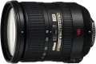

无忌
器材库
全部器材
产品年表
名词百科
榜单
器材库
> APS画幅镜头 > AF-S DX 18-200/3.5-5.6 G IF-ED VR

尼康
AF-S DX 18-200/3.5-5.6 G IF-ED VR
4.01
综合评分
分类
APS画幅镜头
点评
0 条
图片
0 张
评测
0 篇
该镜头变焦倍率达到11.1x；采用了2片ED镜片和3片非球面镜片；启用了增强型VR II防抖系统，效果相当于可降低4挡快门速度。
产品类型
APS画幅镜头
综合评分
4.01分
无忌评测
暂无评测
规格参数
网友点评
(0)
产品图 / 样片
(0)
评测文章
(0)
详细规格
镜头类型
标准变焦镜头
发布日期
2005-11-01
厂家推荐价格
105,000.00 （日元）
焦距
18mm-200mm
等效35mm画幅焦距
27mm-300mm
最大光圈
f/3.5-f/5.6
最小光圈
f/22-f/36
视角（对角）
76-8
镜头结构
16片/12组
非球面镜片
3片
低/超低色散镜片
2片
光圈叶片
7片
最近对焦距离
50cm
最大放大倍率
0.22
驱动马达
SWM（宁静波动马达）
滤镜口径
72mm
镜头卡口
Nikon AF
防抖
是
颜色
黑色
尺寸
77×96.5mm
重量
560g
该产品暂无存档的网友点评
该产品暂无存档的产品图
评测 / 相关文章
该产品暂无存档的评测文章
相关文章
［资讯］尼康DX 18-200mmVR镜头拆解及修复
（存档）